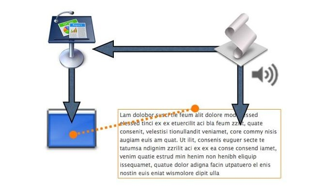
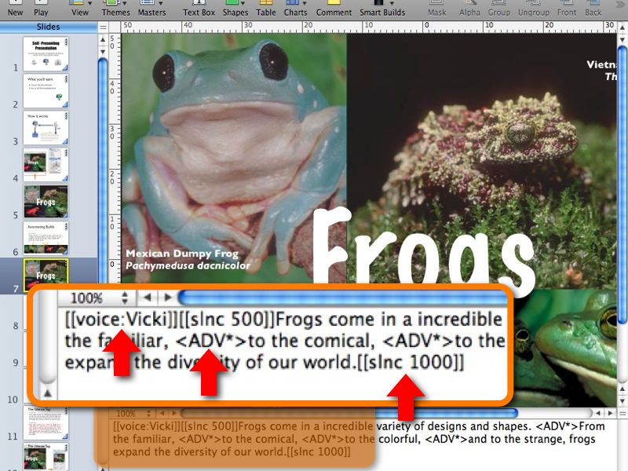

The Self-Presenting Presentation
Great presentations are powerful tools for changing minds and imparting information. But the individual slides, with their graphics, transitions, and builds are only half of a convincing presentation — the other half is the speaker. Unfortunately, not all of us have gifted voices that are able to smoothly present the topics and arguments in a easy consistent flow. We can write what we want to say, but just can say it well.
Mac OS X to the rescue! Using the automation and speech tools of this powerful operating system, you can now create Keynote presentations that present themselves, with each note spoken for you in exact time with the slides!
How It Works
In order to automatically present, the Self-Presenting Presentation uses AppleScript to control the display of slides, and to speak the corresponding slide speaker notes, using the built-in text-to-speech abilities of Mac OS X. When the Self-Presenting Presentation is run, the presenter notes for that slide will be spoken while the slide is displayed.

Advances, Builds, and Narration
To narrate a slide that incorporates builds and reveals, you add special tags into the presenter notes, at the points you want to advance to the next build in that slide. As the notes are read by the script, it will execute the build advances at the indicated point in the text. In addition to the advance tags, you can insert tags to add silence between spoken phrases or actions, and even change the voice for a particular slide or sequence of slides.

Getting Started
To start using the Self-Presenting Presentation to create your own self-presenting slideshows, download the application (top right column on this page) and run it. The slideshow will explain everything you need to know to take advantage of this invaluable tool.
For further study, you can download the Keynote file to see exactly how it is created and runs.